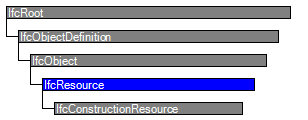

Natural language names
 | Ressource (allgemein) |
 | Resource |
 | Ressource |
| Ressource (allgemein) |
| Resource |
| Ressource |
IfcResource contains the information needed to represent the costs, schedule, and other impacts from the use of a thing in a process. It is not intended to use IfcResource to model the general properties of the things themselves, while an optional linkage from IfcResource to the things to be used can be specified (specifically, the relationship from subtypes of IfcResource to IfcProduct through the IfcRelAssignsToResource relationship).
There are two basic intended uses of IfcResource. First, if the attributes of the thing are not needed for the purpose of the use of IfcResource, or the types of things are not explicitly modeled in IFC yet, then the linkage between the resource and the thing doesn't have to be instantiated in the system. That is, the attributes of IfcResource (or its subtypes) alone are sufficient to represent the use of the thing as a resource for the purpose of the project.
EXAMPLE construction equipment such as earth-moving vehicles or tools are not currently modeled within the IFC. For the purpose of estimating and scheduling, these can be represented using subtypes of IfcResource alone.
Second, if the attributes of the thing are needed for the use of IfcResource objects, and they are modeled explicitly as objects, then the IfcResource instances can be linked to the instances of the type of the things being referenced. Things that might be used as resources and that are already modeled in the IFC include physical products, people and organizations, and materials. The relationship object IfcRelAssignsToResource is provided for this approach.
The inherited attribute ObjectType is used as a textual code that identifies the resource type.
HISTORY New entity in IFC1.0
IFC2x CHANGE The attributes BaseUnit and ResourceConsumption have been removed from the abstract entity; they are reintroduced at a lower level in the hierarchy.
| # | Attribute | Type | Cardinality | Description | C |
|---|---|---|---|---|---|
| 6 | Identification | IfcIdentifier | [0:1] | An identifying designation given to a resource. It is the identifier at the occurrence level. | X |
| 7 | LongDescription | IfcText | [0:1] | A detailed description of the resource (e.g. the skillset for a labor resource). | X |
| ResourceOf | IfcRelAssignsToResource @RelatingResource | S[0:?] | Set of relationships to other objects, e.g. products, processes, controls, resources or actors, for which this resource object is a resource. | X |

| # | Attribute | Type | Cardinality | Description | C |
|---|---|---|---|---|---|
| IfcRoot | |||||
| 1 | GlobalId | IfcGloballyUniqueId | [1:1] | Assignment of a globally unique identifier within the entire software world. | X |
| 2 | OwnerHistory | IfcOwnerHistory | [0:1] |
Assignment of the information about the current ownership of that object, including owning actor, application, local identification and information captured about the recent changes of the object,
NOTE only the last modification in stored - either as addition, deletion or modification. | X |
| 3 | Name | IfcLabel | [0:1] | Optional name for use by the participating software systems or users. For some subtypes of IfcRoot the insertion of the Name attribute may be required. This would be enforced by a where rule. | X |
| 4 | Description | IfcText | [0:1] | Optional description, provided for exchanging informative comments. | X |
| IfcObjectDefinition | |||||
| HasAssignments | IfcRelAssigns @RelatedObjects | S[0:?] | Reference to the relationship objects, that assign (by an association relationship) other subtypes of IfcObject to this object instance. Examples are the association to products, processes, controls, resources or groups. | X | |
| Nests | IfcRelNests @RelatedObjects | S[0:1] | References to the decomposition relationship being a nesting. It determines that this object definition is a part within an ordered whole/part decomposition relationship. An object occurrence or type can only be part of a single decomposition (to allow hierarchical strutures only). | X | |
| IsNestedBy | IfcRelNests @RelatingObject | S[0:?] | References to the decomposition relationship being a nesting. It determines that this object definition is the whole within an ordered whole/part decomposition relationship. An object or object type can be nested by several other objects (occurrences or types). | X | |
| HasContext | IfcRelDeclares @RelatedDefinitions | S[0:1] | References to the context providing context information such as project unit or representation context. It should only be asserted for the uppermost non-spatial object. | X | |
| IsDecomposedBy | IfcRelAggregates @RelatingObject | S[0:?] | References to the decomposition relationship being an aggregation. It determines that this object definition is whole within an unordered whole/part decomposition relationship. An object definitions can be aggregated by several other objects (occurrences or parts). | X | |
| Decomposes | IfcRelAggregates @RelatedObjects | S[0:1] | References to the decomposition relationship being an aggregation. It determines that this object definition is a part within an unordered whole/part decomposition relationship. An object definitions can only be part of a single decomposition (to allow hierarchical strutures only). | X | |
| HasAssociations | IfcRelAssociates @RelatedObjects | S[0:?] | Reference to the relationship objects, that associates external references or other resource definitions to the object.. Examples are the association to library, documentation or classification. | X | |
| IfcObject | |||||
| 5 | ObjectType | IfcLabel | [0:1] |
The type denotes a particular type that indicates the object further. The use has to be established at the level of instantiable subtypes. In particular it holds the user defined type, if the enumeration of the attribute PredefinedType is set to USERDEFINED.
| X |
| IsDeclaredBy | IfcRelDefinesByObject @RelatedObjects | S[0:1] | Link to the relationship object pointing to the declaring object that provides the object definitions for this object occurrence. The declaring object has to be part of an object type decomposition. The associated IfcObject, or its subtypes, contains the specific information (as part of a type, or style, definition), that is common to all reflected instances of the declaring IfcObject, or its subtypes. | X | |
| Declares | IfcRelDefinesByObject @RelatingObject | S[0:?] | Link to the relationship object pointing to the reflected object(s) that receives the object definitions. The reflected object has to be part of an object occurrence decomposition. The associated IfcObject, or its subtypes, provides the specific information (as part of a type, or style, definition), that is common to all reflected instances of the declaring IfcObject, or its subtypes. | X | |
| IsTypedBy | IfcRelDefinesByType @RelatedObjects | S[0:1] | Set of relationships to the object type that provides the type definitions for this object occurrence. The then associated IfcTypeObject, or its subtypes, contains the specific information (or type, or style), that is common to all instances of IfcObject, or its subtypes, referring to the same type. | X | |
| IsDefinedBy | IfcRelDefinesByProperties @RelatedObjects | S[0:?] | Set of relationships to property set definitions attached to this object. Those statically or dynamically defined properties contain alphanumeric information content that further defines the object. | X | |
| IfcResource | |||||
| 6 | Identification | IfcIdentifier | [0:1] | An identifying designation given to a resource. It is the identifier at the occurrence level. | X |
| 7 | LongDescription | IfcText | [0:1] | A detailed description of the resource (e.g. the skillset for a labor resource). | X |
| ResourceOf | IfcRelAssignsToResource @RelatingResource | S[0:?] | Set of relationships to other objects, e.g. products, processes, controls, resources or actors, for which this resource object is a resource. | X | |
| # | Concept | Model View |
|---|---|---|
| IfcRoot | ||
| Software Identity | Common Use Definitions | |
| Revision Control | Common Use Definitions | |
| IfcObject | ||
| Object Occurrence Predefined Type | Common Use Definitions | |
<xs:element name="IfcResource" type="ifc:IfcResource" abstract="true" substitutionGroup="ifc:IfcObject" nillable="true"/>
<xs:complexType name="IfcResource" abstract="true">
<xs:complexContent>
<xs:extension base="ifc:IfcObject">
<xs:attribute name="Identification" type="ifc:IfcIdentifier" use="optional"/>
<xs:attribute name="LongDescription" type="ifc:IfcText" use="optional"/>
</xs:extension>
</xs:complexContent>
</xs:complexType>
ENTITY IfcResource
ABSTRACT SUPERTYPE OF(IfcConstructionResource)
SUBTYPE OF (IfcObject);
Identification : OPTIONAL IfcIdentifier;
LongDescription : OPTIONAL IfcText;
INVERSE
ResourceOf : SET OF IfcRelAssignsToResource FOR RelatingResource;
END_ENTITY;
 EXPRESS-G diagram
EXPRESS-G diagram Link to this page
Link to this page